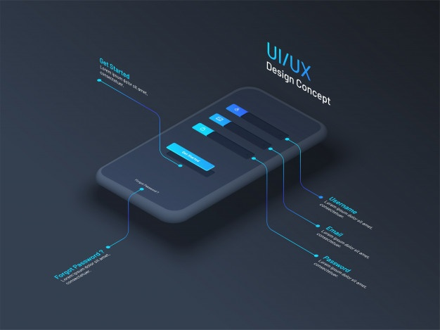

A Designer. Problem Solver.
A designer that enjoys creating useful, usable, and engaging digital expereinces.
What's on your mind?
Lets talk!


A Designer. Problem Solver.
A designer that enjoys creating useful, usable, and engaging digital expereinces.
What's on your mind?
Lets talk!

Conducting user interviews and surveys, creating empathy maps, affinity diagrams, user flows, and storyboarding....I enjoy all of it. The research process really gets the juices flowing, and you never know what unique solutions you can discover for your problem.

Once the user’s experience has been well thought out, I really enjoy adding those final touches that make a design aesthetically pleasing and accessible. Narrowing down a style and color pallette that works together really brings a final design to life.

It’s fun putting some code down and being able to see the ways users interact with your designs. There’s always more to learn, and I’m currently working on becoming more fluent in front end development with HTML, CSS, and JavaScript.

Campus Genie was designed to provide prospective students a streamlined resource to help them find a college that best fits their needs.

The Weather.gov site has very confusing navigation, with many pages and too much information. With this project our team’s goal was to streamline the site, offering clearer navigation and improved functionality.

This redesign was for a non-profit called HomeStretch. After speaking with their stakeholders, we were told they were having trouble obtaining donations recently. Our goal here was to deliver an easier way for their donors to make contributions.